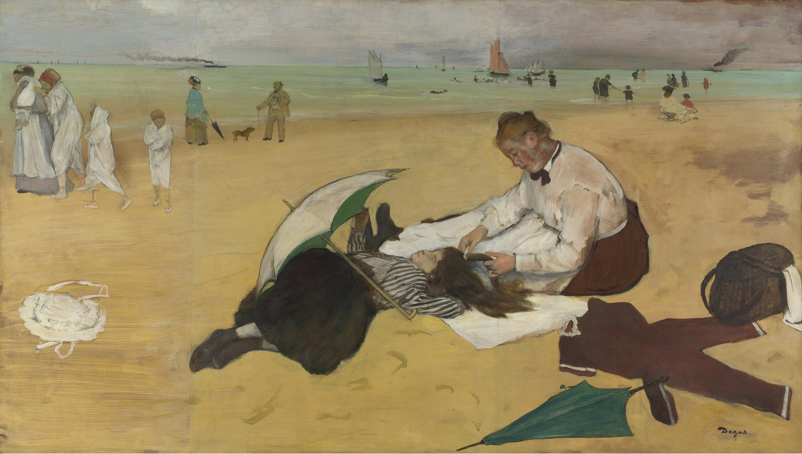

海滩一景 Beach Scene
德加 · 约1869–70年 · 伦敦国家美术馆
Edgar Degas · about 1869–70 · The National Gallery, London
图片：Wikimedia Commons，公有领域 / Image: Wikimedia Commons, public domain

发现 · Discover
梳头 Combing hair
女仆在给一个刚游完泳的小女孩梳头。
A maid combs the hair of a girl who has just been swimming.
晾干的泳衣 A swimsuit drying
小女孩的泳衣摊在沙滩上晾干。
The girl's bathing suit is stretched out on the sand to dry.
阳伞 The parasol
小女孩身边放着一把阳伞。
A parasol lies beside the girl.
日本版画 Japanese prints
女人梳头或被人梳头，是日本版画里常见的题材，后来也成了德加常画的主题。
A woman combing her hair, or having it combed, appears in many Japanese prints, and became part of Degas's own repertoire.
在画室里完成 Finished in the studio
德加大约1869年去法国北部海边时画了一些海滩速写，但他后来说，这幅画是在画室里完成的。
Degas made beach studies on the coast of northern France around 1869, but he later said this picture was finished in the studio.
拼起来的纸 Sheets of paper
这幅画画在纸上。中间画着小女孩的那张纸两边，后来各加了一张纸，大概是因为德加决定把构图扩大。
The painting is on paper. Sheets were later added on either side of the central one with the girl, probably because Degas decided to enlarge the composition.
鲁阿尔的收藏 From the Rouart collection
这幅画曾经属于亨利·鲁阿尔，也就是《埃莱娜·鲁阿尔在父亲的书房》里那位父亲。
This painting once belonged to Henri Rouart, the father in Hélène Rouart in her Father's Study.
故事 · The story
ACT I 第一幕 · 海边 By the sea
大约1869年，德加去了法国北部的海边，画了几幅海滩场景。这是其中一幅。
Around 1869, Degas travelled to the coast of northern France and painted several beach scenes. This is one of them.
约1869–70年 · 伦敦国家美术馆 / about 1869–70 · The National Gallery, London
ACT II 第二幕 · 画室里的海滩 A beach in the studio
这片海滩其实是在画室里完成的。他还在中间那张纸的两边各加了一张纸，把画面扩大。1877年，它在第三届印象派画展上展出。
This beach was in fact completed in the studio. He added a sheet of paper on either side of the central one, enlarging the picture. In 1877, it was shown at the third Impressionist exhibition.
约1869–70年 · 伦敦国家美术馆 / about 1869–70 · The National Gallery, London
ACT III 第三幕 · 伦敦和都柏林 London and Dublin
它曾经属于德加的朋友亨利·鲁阿尔，后来成为休·莱恩爵士的收藏。1917年，它进入伦敦国家美术馆，与都柏林的休·莱恩美术馆共同拥有。
It once belonged to Degas's friend Henri Rouart, and later to Sir Hugh Lane. In 1917 it came to the National Gallery in London, shared with the Hugh Lane Gallery in Dublin.
约1869–70年 · 伦敦国家美术馆 / about 1869–70 · The National Gallery, London
海边，一个安静的下午。 A quiet afternoon by the sea.
作品档案 · Artwork record
| 画家（生卒年） · Artist (dates) | 埃德加·德加（1834–1917） / Edgar Degas (1834–1917) |
|---|---|
| 画名 · Title | 海滩一景 / Beach Scene |
| 年份 · Date | 约1869–70年 / about 1869–70 |
| 材质 · Medium | 纸上稀释油彩，裱于画布 / Oil (essence) on paper on canvas |
| 尺寸 · Dimensions | 47.5 × 82.9 cm |
| 收藏地 · Collection | 伦敦国家美术馆，41号展厅 / The National Gallery, London, Room 41 |
| 来源说明 · Credit line | 休·莱恩爵士遗赠，1917年；与都柏林休·莱恩美术馆合作（编号 NG3247） / Sir Hugh Lane Bequest, 1917. In partnership with Hugh Lane Gallery, Dublin (NG3247) |
关于画家 · About the artist
埃德加·德加（1834–1917），法国画家，生于巴黎。他参加了印象派画展，以描绘芭蕾舞者著称。
Edgar Degas (1834–1917) was a French painter, born in Paris. He took part in the Impressionist exhibitions and is best known for his paintings of ballet dancers.